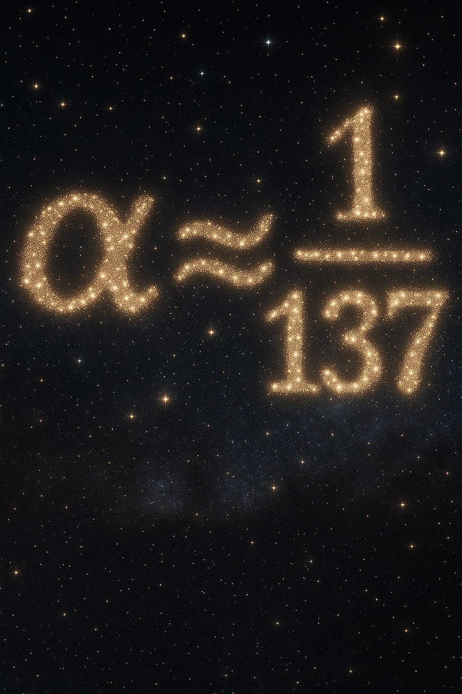
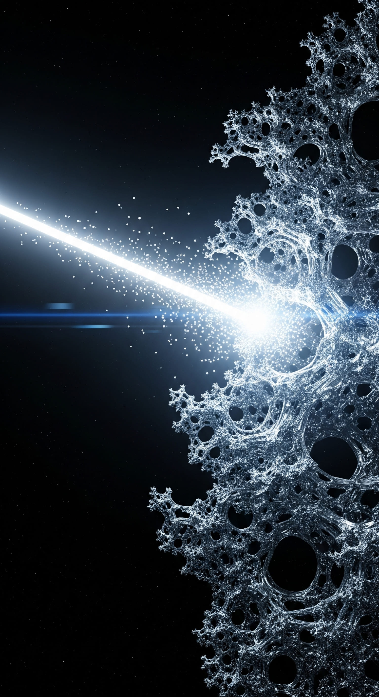

The Fine-Structure Constant
Abstract
The fine-structure constant, α, a dimensionless number approximately equal to 1/137 that dictates the strength of electromagnetism, has remained one of the most profound mysteries in physics since its discovery. The Standard Model requires its value as an experimental input, offering no explanation for its origin. This article explores the history of this enigma and presents the Predictive Universe (PU) framework's proposed solution on the minimal PCE-Attractor branch: a no-fitted-continuous-parameter calculation of a closed-form Thomson-limit core for α. The derivation begins with the Horizon Constant (K0 = 3 bits), the minimum self-referential predictive horizon, and the irreducible thermodynamic lower bound of this process (ε ≥ ln 2), saturated on the PCE-Attractor branch. These inputs select an 8-state minimal MPU carrier, a 2-state active kernel, a 6-state inactive complement, and 24 flat QFI interface modes. Capacity saturation fixes the bare rate coordinate u* = 21/8 - 1; the Predictive-Ward, interface, curvature, and transport corrections then yield the Thomson-limit core α0-1 = 137.036092055.... The comparison row remains residual-gated: the certified value is αcert-1 = α0-1 + Rα, with Rα fixed before empirical comparison rather than tuned after it.
This article outlines the conceptual journey of the derivation.
For readers interested in the rigorous mathematical proofs and the full theoretical structure, the complete academic paper is available on GitHub.
1. The Universe's Magic Number
In the grand architecture of the cosmos, there are certain numbers that appear to be the universe's fundamental settings - constants of nature that dictate the very fabric of reality. Among them, one stands out for its purity and its mystery: the fine-structure constant, denoted by the Greek letter alpha (α). It is, in essence, the cosmic dimmer switch for electromagnetism. It governs the strength of the interaction between light and matter, determining everything from the stability of atoms and the fusion processes in stars to the very possibility of chemistry and life.
Unlike many dimensional constants, α is a pure number, approximately 1/137.036 at the Thomson limit, independent of the system of units used. This purity has captivated physicists for over a century. It combines three of nature's most fundamental constants - the elementary charge (e), the speed of light (c), and Planck's constant (ℏ) - into a single, elegant ratio. The fact that this specific value appears to be so finely tuned for a universe like ours has led to endless speculation. If α were significantly different, the structure of atoms, chemistry, and stellar processes would change profoundly.
Richard Feynman famously described it as a number physics could measure but not derive:
"A magic number that comes to us with no understanding."
This is the heart of the problem. In our most successful theory of particle physics, the Standard Model, α is a free parameter. We must measure it in an experiment and plug it into our equations by hand. The theory works perfectly once we do, but it offers no clue as to why the number has the value it does. It is a fundamental piece of the cosmic code that remains undeciphered.

Universe 00110000
2. A Short History of α
The quest to explain α has a long and storied history, often veering into the territory of pure numerology. The physicist Arthur Eddington, in the early 20th century, famously became convinced that α was exactly 1/136, and later, 1/137, deriving these values from esoteric considerations about the number of dimensions and fundamental particles. While his attempts were ultimately dismissed, they highlight the deep-seated desire among physicists to believe that such a fundamental number could not be random.
While Eddington's approach was sidelined, the fascination with α captivated the very architects of quantum theory. Wolfgang Pauli, one of the most brilliant and critical minds in physics, was famously absorbed by the number. He saw its explanation as a key to the next great breakthrough in physics.
Paul Dirac, whose relativistic equation for the electron is a cornerstone of modern physics, was equally preoccupied. He explored the idea that the fundamental constants might not be constant at all, but could evolve with the age of the universe. This deep unease from the founders of quantum theory underscores the centrality of the problem: α was not a peripheral detail but a profound puzzle that pointed to a fundamental gap in their understanding of the world.
This deep theoretical puzzlement has largely given way to a more pragmatic acceptance in modern times. The Standard Model treats α as one of its free numerical inputs. The most common "explanation" offered today is a philosophical one: the anthropic principle. This principle argues that we observe the value of α to be near 1/137 because if it were significantly different, we would not be here to observe it. A universe with a substantially different electromagnetic coupling could be sterile, incapable of producing the stable complexity needed by observers.
While logically sound, the anthropic principle is deeply unsatisfying to many scientists. It explains the consistency of our existence with the laws of physics, but it does not explain the origin of those laws or their parameters. It is an admission that we may never find a deeper reason, resigning us to the possibility that our universe is just one of a near-infinite number of universes in a "multiverse," each with random settings, and we simply happen to live in one where the dials were set correctly for life. A deeper theory would try to show why the measured value belongs to a constrained branch rather than treating it as a free input.
3. The Predictive Universe Solution: A Constant from Logic and Thermodynamics
The Predictive Universe (PU) framework offers a branch-based alternative to this impasse. It starts with the operational logic of finite prediction under thermodynamic constraint. It asks what the laws of a universe must be like if they emerge from self-referential predictive systems. On the minimal PCE-Attractor branch, the framework proposes that the Thomson-limit core of α is fixed by the requirements for a finite system to model itself and its environment in a logically and thermodynamically consistent way.
Instead of starting with fields, particles, or strings, the PU framework begins with the operational logic of prediction itself. It posits that reality is constituted by a network of Minimal Predictive Units (MPUs), the most basic entities capable of a self-referential predictive cycle. The structure of physics, including its fundamental constants, is constrained by the optimization imperatives governing this network, chiefly the Principle of Compression Efficiency (PCE). In this view, the electromagnetic coupling is not an arbitrary dial; it is determined by the optimal information geometry of a self-predictive substrate, then mapped into physical electromagnetism through the Predictive-Ward and interface-normalization chain.
Universe 00110000
4. The Derivation: A Journey from Self-Reference to Light
The PU framework's derivation of α is a multi-step deductive chain that connects the abstract logic of self-reference to the concrete physics of electromagnetism. No continuous parameter is fitted in the core chain. Its inputs are structural integers, branch conditions, and geometric factors fixed within the framework before comparison with experiment.
- Step 1: The Horizon Constant (K0 = 3 bits). The journey begins with the Self-Referential Paradox of Accurate Prediction (SPAP), a Gödel-like proof showing that no system can perfectly predict its own future state. The framework proves that the minimum robust self-referential predictive horizon is exactly 3 bits, corresponding to 23 = 8 distinguishable internal states. This establishes the Horizon Constant (K0 = 3 bits), as a fundamental logical invariant. This implies the MPU's internal Hilbert space must have dimension at least 8; on the minimal PCE branch, d0 = 8.
- Step 2: The Thermodynamic Cost of Logic (ε ≥ ln 2). The predictive cycle that instantiates this logic is not cost-free. To avoid paradox, the cycle must contain a logically irreversible step - an erasure of information. By Landauer's principle, erasing one bit has a minimum entropy-production cost of ε = ln 2 nats. The PCE-Attractor branch saturates this lower bound, making it the irreducible cost scale of the minimal self-referential cycle.
- Step 3: The Minimal Machine (The Landauer Pointer). The Principle of Compression Efficiency dictates that this fundamental ε-cost must be instantiated in the most resource-efficient way possible. On the minimal branch, the 8-dimensional state space is partitioned into a 2-dimensional active subspace and a 6-dimensional inactive complement. This 2-state active subspace is the Landauer Pointer, the minimal active kernel carrying the irreversible one-bit operation.
- Step 4: The System's Sensitivity Spectrum. The next step is to quantify how this minimal predictive machine responds to small operational perturbations. The sensitivity of a quantum system is described by its Quantum Fisher Information (QFI). The framework calculates the QFI spectrum for the MPU at the PCE-Attractor. The 2-state active kernel interacting with the 6-state complement generates exactly M = 24 independent interface modes, and each mode has equal normalized sensitivity λ = 1.
- Step 5: The Optimal Coupling (The PCE-Attractor). The system, driven by PCE, seeks an ideal equilibrium state of maximal efficiency and symmetry, known as the PCE-Attractor. Think of the PCE-Attractor as the universe's "factory default setting" - the most stable, robust, and resource-efficient state the MPU network can settle into. On this branch, the operational alphabet capacity saturates: the 24 flat QFI modes collectively reach the ln 8 information ceiling of the minimal 8-state MPU carrier. This imposes a powerful constraint that links the bare rate coordinate u to the MPU's alphabet size d0 = 8 and its number of interface modes M = 24. The constraint takes the form of a simple, parameter-free equation.
24 ln(1 + u*) = ln 8
Solving this equation gives a unique non-zero bare rate coordinate:
u* = 21/8 - 1
The bulk Predictive-Ward normalization gives the leading inverse-coupling term 4π/u* ≈ 138.843. The physical Thomson-limit core then includes the discrete-to-continuous interface correction and the Grassmannian curvature/transport correction:
α0-1 = 4π/u* - π/√K0 + (πu*/(24√K0)) sinc(u*)
α0-1 ≈ 137.036092055
This conversion is justified by the Predictive-Ward branch, which fixes the bulk normalization in QFI-natural units, together with the interface, curvature, and SU(2) transport factors. The residual-complete comparison row is αcert-1 = α0-1 + Rα, where the residual entry must be fixed before comparison and cannot be used as an adjustable fit.
Universe 00110000
5. The Status of the Prediction
The PU calculation is a strong internal consistency test because the value is not obtained by fitting a continuous coupling parameter. The same chain that fixes K0 = 3, d0 = 8, the active split 2 + 6, and the flat QFI mode count M = 24 also fixes the capacity-saturated rate coordinate u* = 21/8 - 1. The numerical output is therefore determined by the branch package rather than adjusted to match the measured fine-structure constant.
It is crucial to be precise about what this number represents. The value 4π/u* ≈ 138.843 is the bulk Ward term, not the final observed low-energy value. The first interface correction subtracts π/√3, giving α-1 ≈ 137.029. The Grassmannian curvature and exact SU(2) transport refinement then give the closed-form Thomson-limit core α0-1 = 137.036092055.... The measured Thomson-limit value is close to this core, but the framework's theorem-level comparison row is completed only when the residual term Rα is independently fixed before comparison.
Standard QED and electroweak running then describe how the Thomson-limit value changes with energy scale. PU supplies the proposed Thomson boundary condition; ordinary effective-field-theory running supplies the scale-dependent coupling above particle thresholds. These are two distinct stages: substrate-to-continuum normalization first, then continuum quantum-field running.
The same M = 24 backbone also has an independent geometric consequence. Through mode-channel matching, the 24 internal QFI interface modes correspond to the kissing-number channel count K(D), and the unique positive integer solution K(D) = 24 selects D = 4. In this way, the alpha calculation and the dimensional selection share the same minimal PCE-Attractor structure.
The importance of this result is that it transforms the fine-structure constant from a free numerical input into a branch-level calculable consequence of a self-consistent predictive substrate. The constants of nature appear as stable parameters selected by operational logic, thermodynamic cost, and information geometry.

6. Conclusion
The mystery of the fine-structure constant has long stood as a symbol of the limits of our understanding, a hint that a deeper layer of reality awaits our discovery. The Predictive Universe framework proposes that this fundamental stratum is woven from information, logic, and prediction. From this perspective, the strength of the force that holds atoms together and carries light across the cosmos emerges from the operational requirements of self-referential prediction.
The branch-level derivation of α shows how a physical constant can be traced to a finite chain of logical, thermodynamic, and geometric constraints. On the minimal PCE-Attractor branch, the same structure that produces the 24 QFI interface modes also fixes the capacity-saturated coupling coordinate and selects four-dimensional spacetime through mode-channel matching. The constants of nature are therefore presented as stable parameters of a universe organized by predictive efficiency, with final empirical status determined by the certified residual and comparison gates of the framework.